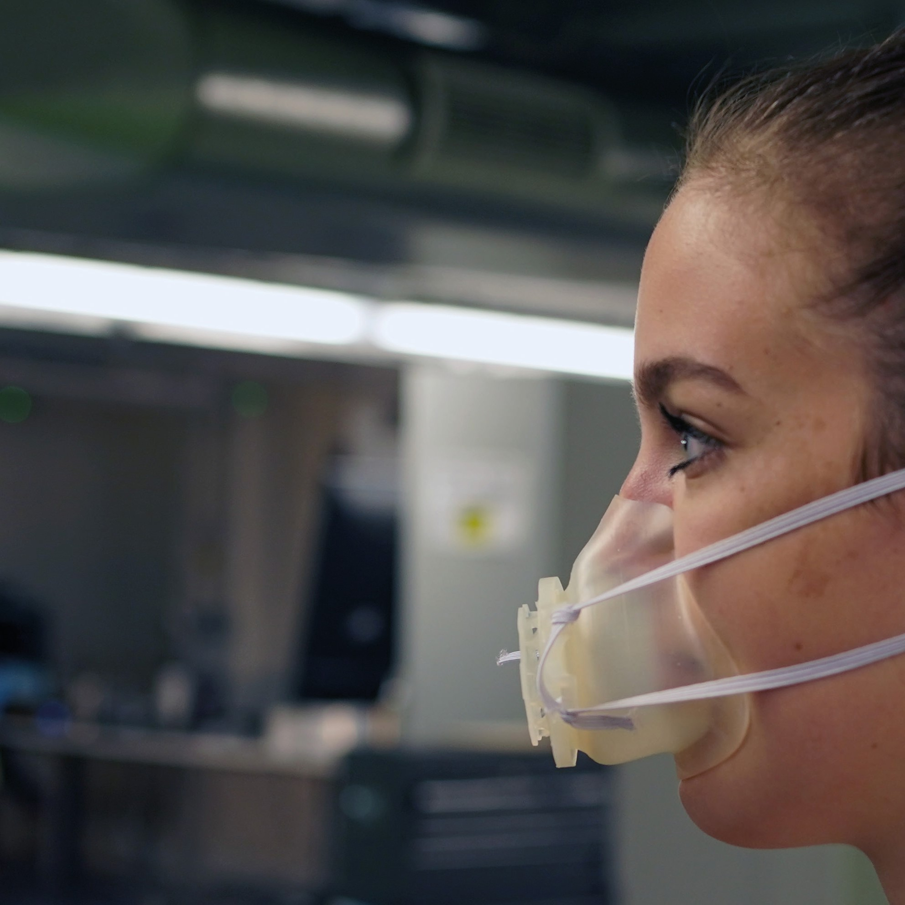
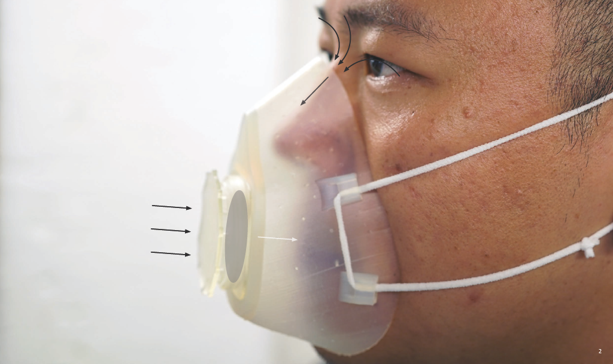
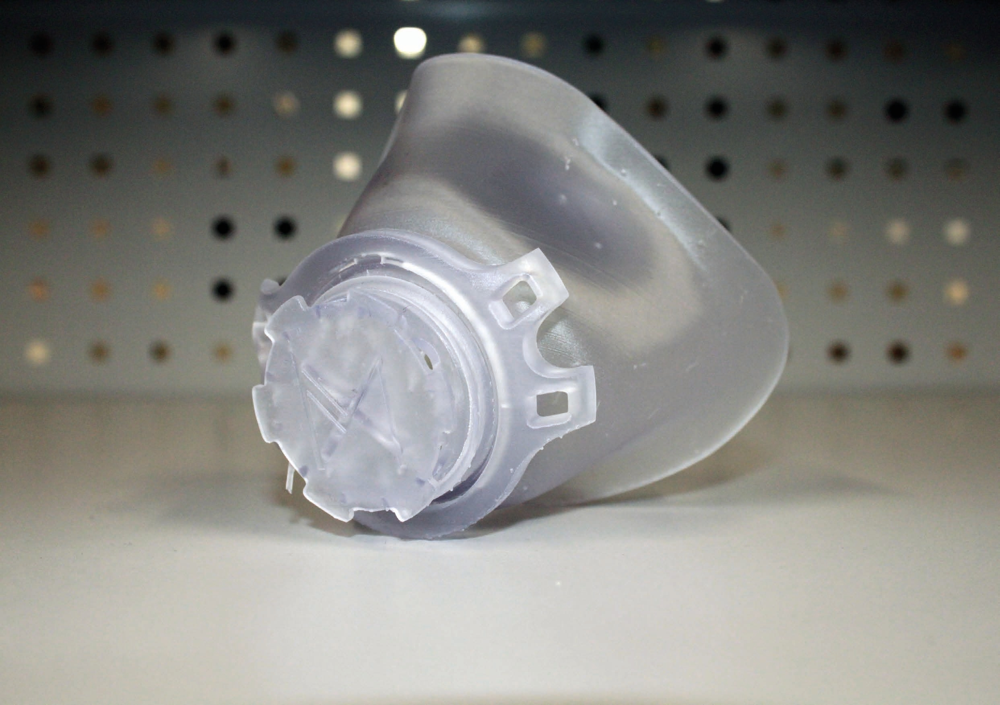

Mensura Mask
Improving one-size-fits-all face masks↓
Mensura Mask was a research-driven initiative led by a group
of researchers from Imperial College London. It aimed to develop a quick and
cost-effective design-through-manufacture process for making custom-fit face
masks in order to provide additional support to healthcare services
during public health crises.


The problem
Conventional filtering face masks do not tightly seal to the face, leaving gaps. Unfiltered air can flow in at these points, making the filter redundant and mask ineffective. Badly fitting masks also lead to discomfort and later pain and injury. Face shapes vary drastically so standardized masks cannot solve the problem.Automation
This project involved automating the creation of a 3D printable STL file for the mask from facial scan data using the Blender API. The code was converted from the Fusion360 API. The flexibility of the program allows for creation of masks to fit different people’s faces, with different thicknesses and inlet sizes.
Mensura mask
My program allows for automation of the custom mask STL file creation process. When implemented into the website server, this provides a consistent, low maintenance public offering for the research team. Masks were successfully fabricated on several FDM and SLA 3D printers.